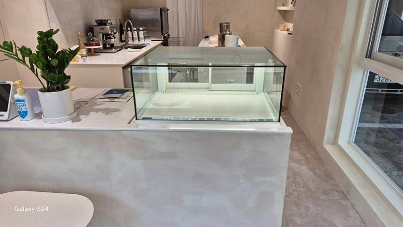
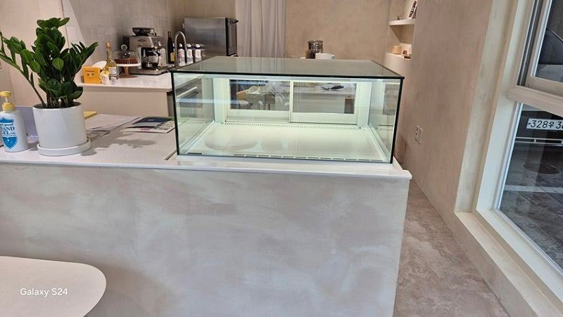
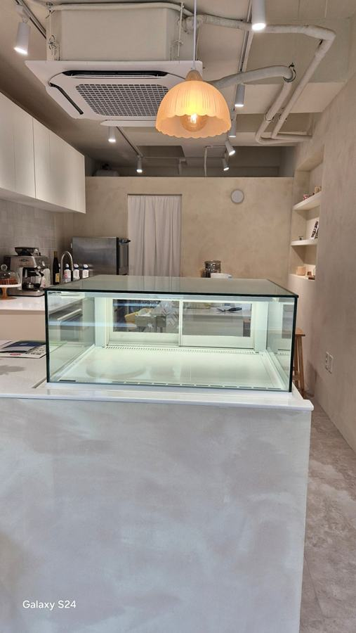
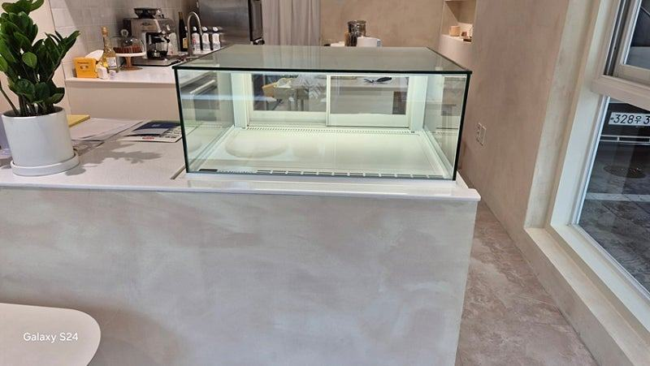
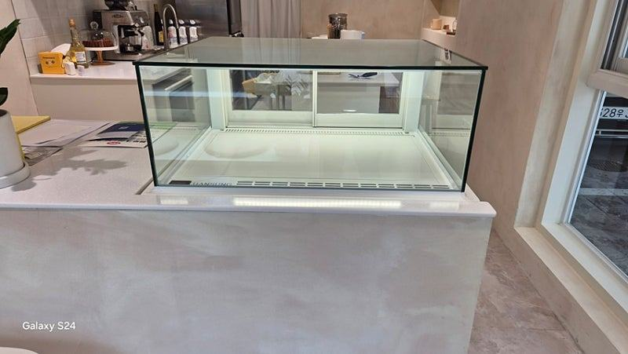
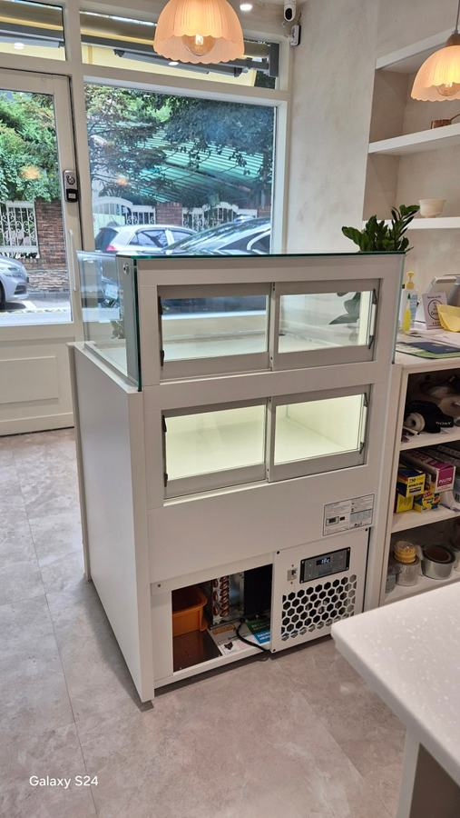
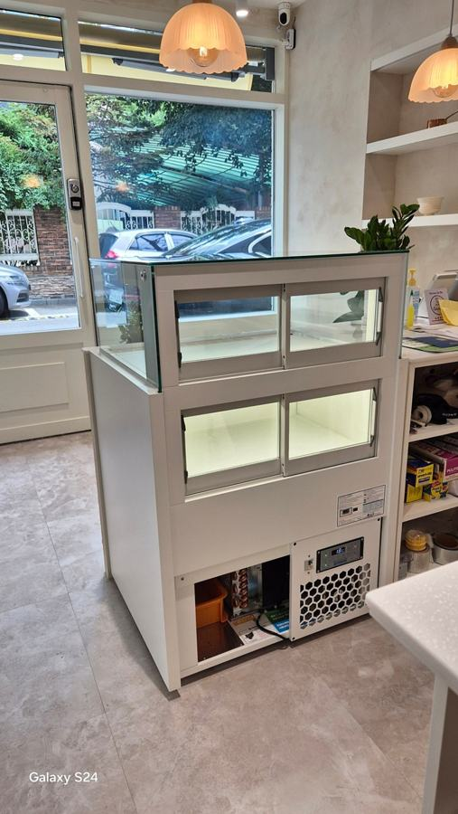
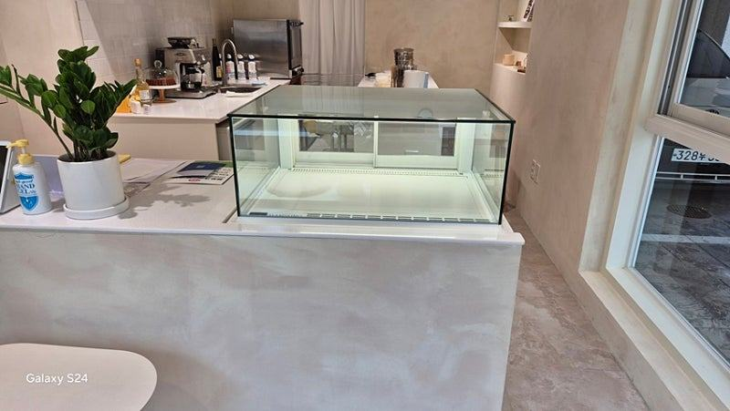
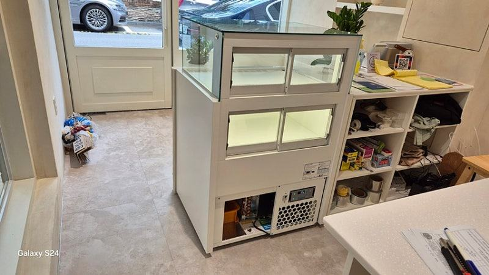
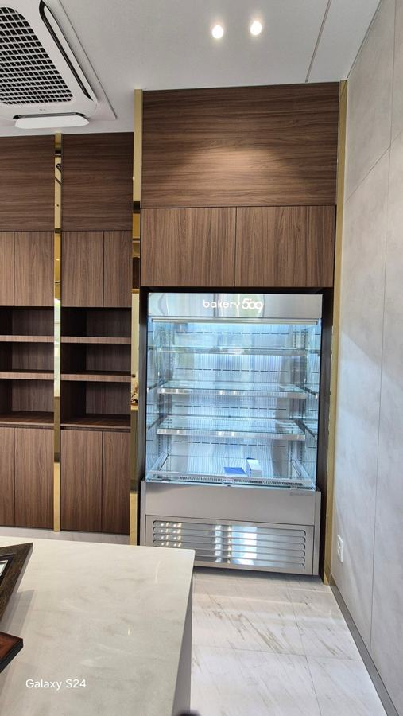

오픈쇼케이스
샐러드가게 쇼케이스 배치, 점심 피크에 줄이 꼬이지 않는 동선

샐러드가게는 손님이 들어와 오픈쇼케이스에서 샐러드를 집고, 음료를 고른 뒤 계산대로 가서 나가는 한 방향 흐름이 되도록 쇼케이스를 입구와 계산대 사이에 두는 것이 기본입니다. 배달 기사 픽업 자리는 이 흐름과 겹치지 않게 따로 빼고, 쇼케이스 앞에는 여러 명이 서서 고를 수 있는 여유를 남겨 두세요.
안녕하세요. 샐러드·포케·샌드위치 매장에 들어가는 오픈쇼케이스를 맞춤 제작하는 한성쇼케이스입니다.
샐러드가게는 점심시간 한두 시간에 하루 매출의 많은 부분이 몰리는 경우가 많습니다. 이때 쇼케이스 앞에서 고르는 손님, 계산하려는 손님, 배달 음식을 찾으러 온 기사님이 한곳에 엉키면 줄이 금방 문밖까지 늘어나죠.
같은 크기의 매장이라도 쇼케이스를 어디에 두느냐에 따라 손님이 머무는 시간과 회전 속도가 달라집니다.
특히 손님이 직접 집어 가는 오픈쇼케이스는 동선의 출발점이 되는 장비입니다.
오늘은 샐러드가게에서 쇼케이스를 어떻게 배치하면 피크 시간에도 흐름이 막히지 않는지, 매장 구조별로 정리해 보겠습니다.
1. 입구에서 출구까지 한 방향으로
가장 이상적인 흐름은 손님이 들어와서 오픈쇼케이스 앞을 지나며 샐러드를 집고, 그 옆 음료 칸에서 음료를 고른 뒤, 계산대에서 결제하고 나가는 한 방향 동선입니다.
되돌아가는 움직임이 없어야 줄이 꼬이지 않습니다.
그래서 쇼케이스는 입구와 계산대 사이 벽면에 두는 경우가 많습니다. 계산대가 입구 바로 옆에 있다면 쇼케이스를 매장 안쪽에 두고, 손님이 안쪽까지 들어갔다가 계산대 쪽으로 돌아 나오는 U자 흐름을 만드는 것도 방법입니다.
- 입구→쇼케이스→음료→계산대 순서를 그려 보세요.
- 되돌아가는 구간이 없는지 확인하세요.
2. 쇼케이스 앞 머무는 공간
샐러드는 메뉴를 비교하며 고르는 시간이 생각보다 깁니다. 오픈쇼케이스 앞에는 손님 두세 명이 나란히 서서 고를 수 있는 폭을 남기고, 그 뒤로 다른 손님이 지나갈 통로가 따로 있어야 합니다.
쇼케이스 앞에 테이블이나 의자를 바짝 붙이면 고르는 손님과 앉아 먹는 손님이 서로 불편해집니다. 매장이 좁다면 좌석 수를 조금 줄이더라도 쇼케이스 앞 공간을 먼저 확보하는 편이 회전에 유리합니다.


3. 배달 픽업과 직원 보충 동선 나누기
배달 주문이 많은 매장은 기사님이 포장된 주문을 찾아가는 자리를 손님 동선과 분리해야 합니다. 출입문 가까운 쪽에 픽업 선반을 따로 두면 기사님이 매장 안쪽까지 들어오지 않아도 됩니다.
직원이 주방에서 만든 샐러드를 쇼케이스에 채우는 길도 확인해 주세요. 보충할 때마다 손님 줄을 가로질러야 한다면 피크 시간에 진열이 비기 쉽습니다.
주방 출입구와 쇼케이스가 가깝거나, 뒤쪽에서 채울 수 있는 구조인지 미리 정해 두세요.
- 배달 픽업 자리는 입구 쪽에 따로 두세요.
- 주방에서 쇼케이스까지 보충 경로를 확인하세요.
4. 피해야 할 자리와 매장 환경
오픈쇼케이스는 문이 없어 주변 공기의 영향을 많이 받습니다. 출입문 바로 앞이나 통유리 창가처럼 바깥 바람과 햇빛이 직접 닿는 자리는 잎채소가 빨리 마르고 온도가 흔들리기 쉽습니다.
설치 바닥의 수평과 전용 전기 위치도 배치를 정할 때 함께 확인해야 합니다. 화이트·우드 톤 매장의 카운터 뒷벽에 1200×750×1900 규격 오픈쇼케이스를 매립형으로 넣고, 병 음료도 함께 진열할 수 있게 선반 간격을 조정한 사례처럼, 벽 하나를 진열 포인트로 만드는 배치도 고려해 보세요.
영업 후에는 나이트커버를 내려 온도를 지켜 주시면 됩니다.
체크리스트
- 입구→쇼케이스→계산대 한 방향 흐름
- 쇼케이스 앞 2~3명 설 공간과 통로
- 배달 픽업 자리 분리
- 주방→쇼케이스 보충 경로
- 출입문·창가 피하기
- 바닥 수평과 전용 전기
현장에서 자주 보는 경우: 매장 환경을 보지 않고 들여 결로와 온도 차가 생긴 쇼케이스
쇼케이스를 들인 뒤 결로가 생기거나 칸마다 온도가 고르지 않다는 상담을 받아 보면, 설치 전에 매장 환경을 살피지 않은 경우가 많습니다.
햇빛이 얼마나 드는지, 손님과 직원 동선이 어떻게 겹치는지, 설치 바닥 수평이 맞는지, 전기가 어떻게 배치돼 있는지가 모두 성능에 영향을 줍니다.
특히 동선은 어떤 문 구조를 고를지와 바로 연결됩니다.
그래서 설계 단계에서 이 항목들을 먼저 확인하고, 그에 맞춰 내부 구조를 정합니다. 한 디저트 매장에는 정면 UV 접합 유리, 주백색 조명, 앞뒤 선반 구성, 좁은 공간에서 작업하기 편한 슬라이딩 도어를 적용했습니다.
매장 구조 사진이나 진열 방식만 알려 주셔도 맞는 구성을 안내해 드릴 수 있습니다.










자주 묻는 질문
매장이 좁아 한 방향 동선을 만들기 어려워요.
쇼케이스 길이를 줄이고 음료 칸을 쇼케이스 안에 함께 넣으면 동선을 짧게 만들 수 있습니다. 매장 도면을 보내 주시면 맞는 크기와 위치를 함께 검토해 드립니다.
오픈쇼케이스를 카운터 뒤에 두면 어떤가요?
손님이 직접 집어 가는 방식이라면 카운터 뒤보다는 손님 쪽에 두는 것이 맞습니다. 직원이 꺼내 드리는 방식이라면 카운터 뒷벽에 두어 진열 포인트로 쓰는 배치도 좋습니다.
설치 전에 매장 환경을 함께 봐 주시나요?
채광, 동선, 바닥 수평, 전기 위치를 확인한 뒤 설계를 진행합니다. 대표전화 031-986-2458로 문의해 주세요.
매장 조건에 맞춰 만드는 한성쇼케이스
원하시는 제품 사진과 설치할 공간 사진만 보내 주셔도 매장에 맞는 구성을 추천해 드립니다.
- 전국 240여 개 A/S 전담 센터 운영
- 본사 대량 자재 매입으로 품질 대비 합리적인 가격
- 유럽제·삼성 냉각 콤프레셔 적용
- 국내 최초 쇼케이스 전문 디자이너 상주
매장 폭과 원하는 진열 구성을 알려 주세요. 실측과 견적을 안내해 드립니다.
031-986-2458